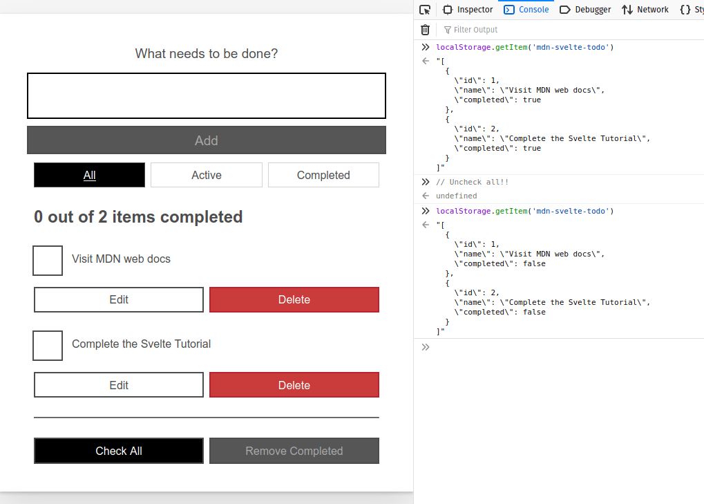

Working with Svelte stores
In the last article we completed the development of our app, finished organizing it into components, and discussed some advanced techniques for dealing with reactivity, working with DOM nodes, and exposing component functionality. In this article we will show another way to handle state management in Svelte: Stores. Stores are global data repositories that hold values. Components can subscribe to stores and receive notifications when their values change.
| Prerequisites: |
At minimum, it is recommended that you are familiar with the core HTML, CSS, and JavaScript languages, and have knowledge of the terminal/command line. You'll need a terminal with node and npm installed to compile and build your app. |
|---|---|
| Objective: | Learn how to use Svelte stores |
Using stores we will create an Alert component that shows notifications on screen, which can receive messages from any component. In this case, the Alert component is independent of the rest — it is not a parent or child of any other — so the messages don't fit into the component hierarchy.
We will also see how to develop our own custom store to persist the todo information to web storage, allowing our to-dos to persist over page reloads.
Code along with us
Git
Clone the GitHub repo (if you haven't already done it) with:
git clone https://github.com/opensas/mdn-svelte-tutorial.git
Then to get to the current app state, run
cd mdn-svelte-tutorial/06-stores
Or directly download the folder's content:
npx degit opensas/mdn-svelte-tutorial/06-stores
Remember to run npm install && npm run dev to start your app in development mode.
REPL
To code along with us using the REPL, start at
https://svelte.dev/repl/d1fa84a5a4494366b179c87395940039?version=3.23.2
Dealing with our app state
We have already seen how our components can communicate with each other using props, two-way data binding, and events. In all these cases we were dealing with communication between parent and child components.
But not all application state belongs inside your application's component hierarchy. For example, information about the logged-in user, or whether the dark theme is selected or not.
Sometimes, your app state will need to be accessed by multiple components that are not hierarchically related, or by a regular JavaScript module.
Moreover, when your app becomes complicated and your component hierarchy gets complex, it might become too difficult for components to relay data between each other. In that case, moving to a global data store might be a good option. If you've already worked with Redux or Vuex, then you'll be familiar with how this kind of store works. Svelte stores offer similar features for state management.
A store is an object with a subscribe() method that allows interested parties to be notified whenever the store value changes, and an optional set() method that allows you to set new values for the store. This minimal API is known as the store contract.
Svelte provides functions for creating readable, writable, and derived stores in the svelte/store module.
Svelte also provides a very intuitive way to integrate stores into its reactivity system using the reactive $store syntax. If you create your own stores honoring the store contract, you get this reactivity syntactic sugar for free.
Creating the Alert component
To show how to work with stores, we will create an Alert component. These kinds of widgets might also be known as popup notifications, toast, or notification bubbles.
Our Alert component will be displayed by the App component, but any component can send notifications to it. Whenever a notification arrives, the Alert component will be in charge of displaying it on screen.
Creating a store
Let's start by creating a writable store. Any component will be able to write to this store, and the Alert component will subscribe to it and display a message whenever the store is modified.
- Create a new file,
stores.js, inside yoursrcdirectory. - Give it the following content:
import { writable } from 'svelte/store' export const alert = writable('Welcome to the to-do list app!')
Note: Stores can be defined and used outside Svelte components, so you can organize them in any way you please.
In the above code we import the writable() function from svelte/store and use it to create a new store called alert with an initial value of "Welcome to the to-do list app!". We then export the store.
Creating the actual component
Let's now create our Alert component and see how we can read values from the store.
- Create another new file named
src/components/Alert.svelte. - Give it the following content:
<script> import { alert } from '../stores.js' import { onDestroy } from 'svelte' let alertContent = '' const unsubscribe = alert.subscribe((value) => alertContent = value) onDestroy(unsubscribe) </script> {#if alertContent} <div on:click={() => alertContent = ''}> <p>{ alertContent }</p> </div> {/if} <style> div { position: fixed; cursor: pointer; margin-right: 1.5rem; margin-left: 1.5rem; margin-top: 1rem; right: 0; display: flex; align-items: center; border-radius: 0.2rem; background-color: #565656; color: #fff; font-weight: 700; padding: 0.5rem 1.4rem; font-size: 1.5rem; z-index: 100; opacity: 95%; } div p { color: #fff; } div svg { height: 1.6rem; fill: currentcolor; width: 1.4rem; margin-right: 0.5rem; } </style>
Let's walk through this piece of code in detail.
- At the beginning we import the
alertstore. - Next we import the
onDestroy()lifecycle function, which lets us execute a callback after the component has been unmounted. - We then create a local variable named
alertContent. Remember that we can access top-level variables from the markup, and whenever they are modified, the DOM will update accordingly. - Then we call the method
alert.subscribe(), passing it a callback function as a parameter. Whenever the value of the store changes, the callback function will be called with the new value as its parameter. In the callback function we just assign the value we receive to the local variable, which will trigger the update of the component's DOM. - The
subscribe()method also returns a cleanup function, which takes care of releasing the subscription. So we subscribe when the component is being initialized, and useonDestroyto unsubscribe when the component is unmounted. - Finally we use the
alertContentvariable in our markup, and if the user clicks on the alert we clean it. - At the end we include a few CSS lines to style our
Alertcomponent.
This setup allows us to work with stores in a reactive way. When the value of the store changes, the callback is executed. There we assign a new value to a local variable, and thanks to Svelte reactivity all our markup and reactive dependencies are updated accordingly.
Using the component
Let's now use our component.
- In
App.sveltewe'll import the component. Add the following import statement below the existing one:import Alert from './components/Alert.svelte' - Then call the
Alertcomponent just above theTodoscall, like this:<Alert /> <Todos {todos} /> -
Load your test app now, and you should now see the
Alertmessage on screen. You can click on it to dismiss it.
Making stores reactive with the reactive $store syntax
This works, but you'll have to copy and paste all this code every time you want to subscribe to a store:
<script>
import myStore from "./stores.js";
import { onDestroy } from "svelte";
let myStoreContent = "";
const unsubscribe = myStore.subscribe((value) => (myStoreContent = value));
onDestroy(unsubscribe);
</script>
{myStoreContent}
That's too much boilerplate for Svelte! Being a compiler, Svelte has more resources to make our lives easier. In this case Svelte provides the reactive $store syntax, also known as auto-subscription. In simple terms, you just prefix the store with the $ sign and Svelte will generate the code to make it reactive automatically. So our previous code block can be replaced with this:
<script>
import myStore from "./stores.js";
</script>
{$myStore}
And $myStore will be fully reactive. This also applies to your own custom stores. If you implement the subscribe() and set() methods, as we'll do later, the reactive $store syntax will also apply to your stores.
- Let's apply this to our
Alertcomponent. Update the<script>and markup sections ofAlert.svelteas follows:<script> import { alert } from '../stores.js' </script> {#if $alert} <div on:click={() => $alert = ''}> <p>{ $alert }</p> </div> {/if} - Check your app again and you'll see that this works just like before. That's much better!
Behind the scenes Svelte has generated the code to declare the local variable $alert, subscribe to the alert store, update $alert whenever the store's content is modified, and unsubscribe when the component is unmounted. It will also generate the alert.set() statements whenever we assign a value to $alert.
The end result of this nifty trick is that you can access global stores just as easily as using reactive local variables.
This is a perfect example of how Svelte puts the compiler in charge of better developer ergonomics, not only saving us from typing boilerplate, but also generating less error-prone code.
Writing to our store
Writing to our store is just a matter of importing it and executing $store = 'new value'. Let's use it in our Todos component.
- Add the following
importstatement below the existing ones:import { alert } from '../stores.js' - Update your
addTodo()function like so:function addTodo(name) { todos = [...todos, { id: newTodoId, name, completed: false }] $alert = `Todo '${name}' has been added` } - Update
removeTodo()like so:function removeTodo(todo) { todos = todos.filter((t) => t.id !== todo.id) todosStatus.focus() // give focus to status heading $alert = `Todo '${todo.name}' has been deleted` } - Update the
updateTodo()function to this:function updateTodo(todo) { const i = todos.findIndex((t) => t.id === todo.id) if (todos[i].name !== todo.name) $alert = `todo '${todos[i].name}' has been renamed to '${todo.name}'` if (todos[i].completed !== todo.completed) $alert = `todo '${todos[i].name}' marked as ${todo.completed ? 'completed' : 'active'}` todos[i] = { ...todos[i], ...todo } } - Add the following reactive block beneath the block that starts with
let filter = 'all':$: { if (filter === 'all') { $alert = 'Browsing all to-dos'; } else if (filter === 'active') { $alert = 'Browsing active to-dos'; } else if (filter === 'completed') { $alert = 'Browsing completed to-dos'; } } - And finally for now, update the
const checkAllTodosandconst removeCompletedTodosblocks as follows:const checkAllTodos = (completed) => { todos = todos.map((t) => ({...t, completed})) $alert = `${completed ? 'Checked' : 'Unchecked'} ${todos.length} to-dos` } const removeCompletedTodos = () => { $alert = `Removed ${todos.filter((t) => t.completed).length} to-dos` todos = todos.filter((t) => !t.completed) } - So basically, we've imported the store and updated it on every event, which causes a new alert to show each time. Have a look at your app again, and try adding/deleting/updating a few to-dos!
As soon as we execute $alert = …, Svelte will run alert.set(). Our Alert component — like every subscriber to the alert store — will be notified when it receives a new value, and thanks to Svelte reactivity its markup will be updated.
We could do the same within any component or .js file.
Note: Outside Svelte components you cannot use the $store syntax. That's because the Svelte compiler won't touch anything outside Svelte components. In that case you'll have to rely on the store.subscribe() and store.set() methods.
Improving our Alert component
It's a bit annoying having to click on the alert to get rid of it. It would be better if the notification just disappeared after a couple of seconds.
Let's see how to do that. We'll specify a prop with the milliseconds to wait before clearing the notification, and we'll define a timeout to remove the alert. We'll also take care of clearing the timeout when the Alert component is unmounted to prevent memory leaks.
- Update the
<script>section of yourAlert.sveltecomponent like so:import { onDestroy } from 'svelte' import { alert } from '../stores.js' export let ms = 3000 let visible let timeout const onMessageChange = (message, ms) => { clearTimeout(timeout) if (!message) { // hide Alert if message is empty visible = false } else { visible = true // show alert if (ms > 0) timeout = setTimeout(() => visible = false, ms) // and hide it after ms milliseconds } } $: onMessageChange($alert, ms) // whenever the alert store or the ms props changes run onMessageChange onDestroy(() => clearTimeout(timeout)) // make sure we clean-up the timeout - And update the
Alert.sveltemarkup section like so:{#if visible} <div on:click={() => visible = false}> <svg xmlns="http://www.w3.org/2000/svg" viewBox="0 0 20 20"><path d="M12.432 0c1.34 0 2.01.912 2.01 1.957 0 1.305-1.164 2.512-2.679 2.512-1.269 0-2.009-.75-1.974-1.99C9.789 1.436 10.67 0 12.432 0zM8.309 20c-1.058 0-1.833-.652-1.093-3.524l1.214-5.092c.211-.814.246-1.141 0-1.141-.317 0-1.689.562-2.502 1.117l-.528-.88c2.572-2.186 5.531-3.467 6.801-3.467 1.057 0 1.233 1.273.705 3.23l-1.391 5.352c-.246.945-.141 1.271.106 1.271.317 0 1.357-.392 2.379-1.207l.6.814C12.098 19.02 9.365 20 8.309 20z"/></svg> <p>{ $alert }</p> </div> {/if}
Here we first create the prop ms with a default value of 3000 (milliseconds). Then we create an onMessageChange() function that will take care of controlling whether the Alert is visible or not. With $: onMessageChange($alert, ms) we tell Svelte to run this function whenever the $alert store or the ms prop changes.
Whenever the $alert store changes, we'll clean up any pending timeout. If $alert is empty, we set visible to false and the Alert will be removed from the DOM. If it is not empty, we set visible to true and use the setTimeout() function to clear the alert after ms milliseconds.
Finally, with the onDestroy() lifecycle function, we make sure to call the clearTimeout() function.
We also added an SVG icon above the alert paragraph, to make it look a bit nicer. Try it out again, and you should see the changes.
Making our Alert component accessible
Our Alert component is working fine, but it's not very friendly to assistive technologies. The problem is elements that are dynamically added and removed from the page. While visually evident to users who can see the page, they may not be so obvious to users of assistive technologies, like screen readers. To handle those situations, we can take advantage of ARIA live regions, which provide a way to programmatically expose dynamic content changes so that they can be detected and announced by assistive technologies.
We can declare a region that contains dynamic content that should be announced by assistive technologies with the aria-live property followed by the politeness setting, which is used to set the priority with which screen readers should handle updates to that regions. The possible settings are off, polite, or assertive.
For common situations, you also have several predefined specialized role values that can be used, like log, status and alert.
In our case, just adding a role="alert" to the <div> container will do the trick, like this:
<div role="alert" on:click={() => visible = false}>
In general, testing your applications using screen readers is a good idea, not only to discover accessibility issues but also to get used to how visually impaired people use the Web. You have several options, like NVDA for Windows, ChromeVox for Chrome, Orca on Linux, and VoiceOver for macOS and iOS, among other options.
To learn more about detecting and fixing accessibility issues, check out our Handling common accessibility problems article.
Using the store contract to persist our to-dos
Our little app lets us manage our to-dos quite easily, but is rather useless if we always get the same list of hardcoded to-dos when we reload it. To make it truly useful, we have to find out how to persist our to-dos.
First we need some way for our Todos component to give back the updated to-dos to its parent. We could emit an updated event with the list of to-dos, but it's easier just to bind the todos variable. Let's open App.svelte and try it.
- First, add the following line below your
todosarray:$: console.log('todos', todos) - Next, update your
Todoscomponent call as follows:<Todos bind:todos />Note:
<Todos bind:todos />is just a shortcut for<Todos bind:todos={todos} />. - Go back to your app, try adding some to-dos, then go to your developer tools web console. You'll see that every modification we make to our to-dos is reflected in the
todosarray defined inApp.sveltethanks to thebinddirective.
Now we have to find a way to persist these to-dos. We could implement some code in our App.svelte component to read and save our to-dos to web storage or to a web service.
But wouldn't it be better if we could develop some generic store that allows us to persist its content? This would allow us to use it just like any other store, and abstract away the persistence mechanism. We could create a store that syncs its content to web storage, and later develop another one that syncs against a web service. Switching between them would be trivial and we wouldn't have to touch App.svelte at all.
Saving our to-dos
So let's start by using a regular writable store to save our to-dos.
- Open the file
stores.jsand add the following store below the existing one:export const todos = writable([]) -
That was easy. Now we need to import the store and use it in
App.svelte. Just remember that to access the to-dos now we have to use the$todosreactive$storesyntax. Update yourApp.sveltefile like this:<script> import Todos from "./components/Todos.svelte"; import Alert from "./components/Alert.svelte"; import { todos } from "./stores.js"; $todos = [ { id: 1, name: "Create a Svelte starter app", completed: true }, { id: 2, name: "Create your first component", completed: true }, { id: 3, name: "Complete the rest of the tutorial", completed: false } ]; </script> <Alert /> <Todos bind:todos={$todos} /> - Try it out; everything should work. Next we'll see how to define our own custom stores.
How to implement a store contract: The theory
You can create your own stores without relying on svelte/store by implementing the store contract. Its features must work like so:
- A store must contain a
subscribe()method, which must accept as its argument a subscription function. All of a store's active subscription functions must be called whenever the store's value changes. - The
subscribe()method must return anunsubscribe()function, which when called must stop its subscription. - A store may optionally contain a
set()method, which must accept as its argument a new value for the store, and which synchronously calls all of the store's active subscription functions. A store with aset()method is called a writable store.
First, let's add the following console.log() statements to our App.svelte component to see the todos store and its content in action. Add these lines below the todos array:
console.log('todos store - todos:', todos)
console.log('todos store content - $todos:', $todos)
When you run the app now, you'll see something like this in your web console:

As you can see, our store is just an object containing subscribe(), set(), and update() methods, and $todos is our array of to-dos.
Just for reference, here's a basic working store implemented from scratch:
export const writable = (initial_value = 0) => {
let value = initial_value // content of the store
let subs = [] // subscriber's handlers
const subscribe = (handler) => {
subs = [...subs, handler] // add handler to the array of subscribers
handler(value) // call handler with current value
return () => subs = subs.filter((sub) => sub !== handler) // return unsubscribe function
}
const set = (new_value) => {
if (value === new_value) return // same value, exit
value = new_value // update value
subs.forEach((sub) => sub(value)) // update subscribers
}
const update = (update_fn) => set(update_fn(value)) // update function
return { subscribe, set, update } // store contract
}
Here we declare subs, which is an array of subscribers. In the subscribe() method we add the handler to the subs array and return a function that, when executed, will remove the handler from the array.
When we call set(), we update the value of the store and call each handler, passing the new value as a parameter.
Usually you don't implement stores from scratch; instead you'd use the writable store to create custom stores with domain-specific logic. In the following example we create a counter store, which will only allow us to add one to the counter or reset its value:
import { writable } from 'svelte/store';
function myStore() {
const { subscribe, set, update } = writable(0);
return {
subscribe,
addOne: () => update((n) => n + 1),
reset: () => set(0)
};
}
If our to-do list app gets too complex, we could let our to-dos store handle every state modification. We could move all the methods that modify the todo array (like addTodo(), removeTodo(), etc.) from our Todos component to the store. If you have a central place where all the state modification is applied, components could just call those methods to modify the app's state and reactively display the info exposed by the store. Having a unique place to handle state modifications makes it easier to reason about the state flow and spot issues.
Svelte won't force you to organize your state management in a specific way; it just provides the tools for you to choose how to handle it.
Implementing our custom to-dos store
Our to-do list app is not particularly complex, so we won't move all our modification methods into a central place. We'll just leave them as they are, and instead concentrate on persisting our to-dos.
Note: If you are following this guide working from the Svelte REPL, you won't be able to complete this step. For security reasons the Svelte REPL works in a sandboxed environment which will not let you access web storage, and you will get a "The operation is insecure" error. In order to follow this section, you'll have to clone the repo and go to the mdn-svelte-tutorial/06-stores folder, or you can directly download the folder's content with npx degit opensas/mdn-svelte-tutorial/06-stores.
To implement a custom store that saves its content to web storage, we will need a writable store that does the following:
- Initially reads the value from web storage, and if it's not present, initializes it with a default value
- Whenever the value is modified, updates the store itself and also the data in local storage
Moreover, because web storage only supports saving string values, we will have to convert from object to string when saving, and vice versa when we are loading the value from local storage.
- Create a new file called
localStore.js, in yoursrcdirectory. - Give it the following content:
import { writable } from 'svelte/store'; export const localStore = (key, initial) => { // receives the key of the local storage and an initial value const toString = (value) => JSON.stringify(value, null, 2) // helper function const toObj = JSON.parse // helper function if (localStorage.getItem(key) === null) { // item not present in local storage localStorage.setItem(key, toString(initial)) // initialize local storage with initial value } const saved = toObj(localStorage.getItem(key)) // convert to object const { subscribe, set, update } = writable(saved) // create the underlying writable store return { subscribe, set: (value) => { localStorage.setItem(key, toString(value)) // save also to local storage as a string return set(value) }, update } }- Our
localStorewill be a function that when executed initially reads its content from web storage, and returns an object with three methods:subscribe(),set(), andupdate(). - When we create a new
localStore, we'll have to specify the key of the web storage and an initial value. We then check if the value exists in web storage and, if not, we create it. - We use the
localStorage.getItem(key)andlocalStorage.setItem(key, value)methods to read and write information to web storage, and thetoString()andtoObj()(which usesJSON.parse()) helper functions to convert the values. - Next, we convert the string content received from the web storage to an object, and save that object in our store.
- Finally, every time we update the contents of the store, we also update the web storage, with the value converted to a string.
set()method, adding the operation to save the value to web storage. The rest of the code is mostly initializing and converting stuff. - Our
-
Now we will use our local store from
stores.jsto create our locally persisted to-dos store. Updatestores.jslike so:Usingimport { writable } from 'svelte/store' import { localStore } from './localStore.js' export const alert = writable('Welcome to the to-do list app!') const initialTodos = [ { id: 1, name: 'Visit MDN web docs', completed: true }, { id: 2, name: 'Complete the Svelte Tutorial', completed: false }, ] export const todos = localStore('mdn-svelte-todo', initialTodos)localStore('mdn-svelte-todo', initialTodos), we are configuring the store to save the data in web storage under the keymdn-svelte-todo. We also set a couple of todos as initial values. - Now let's get rid of the hardcoded to-dos in
App.svelte. Update its contents as follows. We are basically just deleting the$todosarray and theconsole.log()statements:<script> import Todos from './components/Todos.svelte' import Alert from './components/Alert.svelte' import { todos } from './stores.js' </script> <Alert /> <Todos bind:todos={$todos} />Note: This is the only change we have to make in order to use our custom store.
App.svelteis completely transparent in terms of what kind of store we are using. - Go ahead and try your app again. Create a few to-dos and then close the browser. You may even stop the Svelte server and restart it. Upon revisiting the URL, your to-dos will still be there.
-
You can also inspect it in the DevTools console. In the web console, enter the command
localStorage.getItem('mdn-svelte-todo'). Make some changes to your app, like pressing the Uncheck All button, and check the web storage content once more. You will get something like this: 
Svelte stores provide a very simple and lightweight, but extremely powerful, way to handle complex app state from a global data store in a reactive way. And because Svelte compiles our code, it can provide the $store auto-subscription syntax that allows us to work with stores in the same way as local variables. Because stores have a minimal API, it's very simple to create our custom stores to abstract away the inner workings of the store itself.
Bonus track: Transitions
Let's change the subject now and do something fun and different: add an animation to our alerts. Svelte provides a whole module to define transitions and animations so we can make our user interfaces more appealing.
A transition is applied with the transition:fn directive, and is triggered by an element entering or leaving the DOM as a result of a state change. The svelte/transition module exports seven functions: fade, blur, fly, slide, scale, draw, and crossfade.
Let's give our Alert component a fly transition. We'll open the Alert.svelte file and import the fly function from the svelte/transition module.
- Put the following
importstatement below the existing ones:import { fly } from 'svelte/transition' - To use it, update your opening
<div>tag like so:Transitions can also receive parameters, like this:<div role="alert" on:click={() => visible = false} transition:fly ><div role="alert" on:click={() => visible = false} transition:fly="{{delay: 250, duration: 300, x: 0, y: -100, opacity: 0.5}}" >Note: The double curly braces are not special Svelte syntax. It's just a literal JavaScript object being passed as a parameter to the fly transition.
- Try your app out again, and you'll see that the notifications now look a bit more appealing.
Note: Being a compiler allows Svelte to optimize the size of our bundle by excluding features that are not used. In this case, if we compile our app for production with npm run build, our public/build/bundle.js file will weight a little less than 22 KB. If we remove the transitions:fly directive Svelte is smart enough to realize the fly function is not being used and the bundle.js file size will drop down to just 18 KB.
This is just the tip of the iceberg. Svelte has lots of options for dealing with animations and transitions. Svelte also supports specifying different transitions to apply when the element is added or removed from the DOM with the in:fn/out:fn directives, and it also allows you to define your custom CSS and JavaScript transitions. It also has several easing functions to specify the rate of change over time. Have a look at the ease visualizer to explore the various ease functions available.
The code so far
Git
To see the state of the code as it should be at the end of this article, access your copy of our repo like this:
cd mdn-svelte-tutorial/07-next-steps
Or directly download the folder's content:
npx degit opensas/mdn-svelte-tutorial/07-next-steps
Remember to run npm install && npm run dev to start your app in development mode.
REPL
To see the current state of the code in a REPL, visit:
https://svelte.dev/repl/378dd79e0dfe4486a8f10823f3813190?version=3.23.2
Summary
In this article we added two new features: an Alert component and persisting todos to web storage.
- This allowed us to showcase some advanced Svelte techniques. We developed the
Alertcomponent to show how to implement cross-component state management using stores. We also saw how to auto-subscribe to stores to seamlessly integrate them with the Svelte reactivity system. - Then we saw how to implement our own store from scratch, and also how to extend Svelte's writable store to persist data to web storage.
- At the end we had a look at using the Svelte
transitiondirective to implement animations on DOM elements.
In the next article we will learn how add TypeScript support to our Svelte application. To take advantage of all its features, we will also port our entire application to TypeScript.
In this module
- Introduction to client-side frameworks
- Framework main features
- React
- Ember
- Vue
- Getting started with Vue
- Creating our first Vue component
- Rendering a list of Vue components
- Adding a new todo form: Vue events, methods, and models
- Styling Vue components with CSS
- Using Vue computed properties
- Vue conditional rendering: editing existing todos
- Focus management with Vue refs
- Vue resources
- Svelte
- Angular